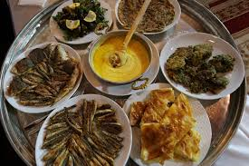

"O söz ülkesinden bir içki almak istiyorsun, ellerindeki pisliği temizlemelisin. Dikkatli ol evlat! Hayallerinin planları var..."
"...Şimdi sessiz ol, canavarı uyandıracaksın. Ruhunu onun ulaşamayacağı bir yere sakla. O kırık ritme ürper, karanlık sıcaklığa."
Fleurie | Soldier
dokuzun yardakçısı
Sümela Manastırı
Maçkada bulunur.Meryem Ana adına kurulmuştur.Dar uzun bir merdivenle manastırın ana girişine ulaşılmaktadır.
İzleHoron
Düğünlerin, eğlence mekânlarının vazgeçilmezi olan horon enerjiyi de son nefese kadar harcatmayı başaran bir halk dansı. Kız horonu,erkek horonu ve karışık horon olmak üzere üç çeşidi vardır.Horonlar kemence, tulum ve davul eşliğinde oynanır, kökenleri karadeniz yöresinde yaşamış latin devletlerine dayanır.
İzle

Trabzon Mutfağı
Otların hakim olduğu bir mutfak çeşidi olup genelde lahana, ısırgan, mısır gibi bitkilerin kullanıldığı yemekler yapılır. Ayriyeten temeli hamsiye dayanan bilumum yemek çeşidi sayılabilir:)
İzleTrabzonspor
1967 de kurulmuştur.'Seni her halinle neden seveyim ki! Sen Trabzonspor musun?' sözü her şeyi anlatır.
İzleKazım Koyuncu
Karadenizin en önemli rock şarkıcalarından olup.Müziği ve düşünceleriyle kalplerimizi fethetmiştir.
İzleZigana Dağları
Tarihi İpek Yolu’nun en önemli geçitlerinden biri olmuştur.Manzarasıyla da insanı büyüleyen bir yapıdır.
İzle